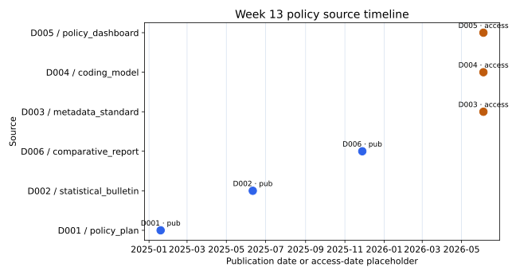
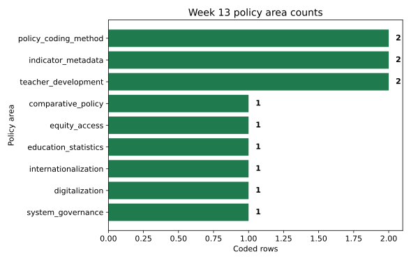

Education policy data
Metadata + timeline + coding scheme.
Từ MTPE logs sang policy sources
Vẫn là bảng: mỗi row phải có unit, metadata và limitation.
Vẫn là bảng: mỗi row phải có unit, metadata và limitation.
Policy areas nào xuất hiện trong source set?
Ta không đánh giá policy impact; ta mô tả source coverage.
Ta không đánh giá policy impact; ta mô tả source coverage.
Một row = một coded source entry
Một document có thể có nhiều coded rows nếu nó chứa nhiều themes.
Một document có thể có nhiều coded rows nếu nó chứa nhiều themes.
Metadata trước interpretation
Title, issuing body, date, URL, access date.
Date strings cần parse
Dùng pd.to_datetime trước khi sort timeline.
Dùng pd.to_datetime trước khi sort timeline.
policy_area + theme_code
Broad category để count; narrow theme để explain.
Broad category để count; narrow theme để explain.
Không trộn policy text với statistics
Policy plan, bulletin, metadata và report là evidence khác nhau.
Policy plan, bulletin, metadata và report là evidence khác nhau.
Tạo timeline table
policy["issue_date_parsed"] = pd.to_datetime(policy["issue_date"])
policy["issue_date_parsed"] = pd.to_datetime(policy["issue_date"])
policy.sort_values("issue_date_parsed")Policy-area summary
digitalization, teacher development, metadata, coding models.
policy_area x evidence_type
Bước này giúp chống overclaim.
Bước này giúp chống overclaim.
Figure 1: policy source timeline
Timeline mô tả source dates, không mô tả impact.

Figure 2: policy-area counts
Counts mô tả sample, không phải toàn bộ policy universe.

Description không phải evaluation
Yếu: policy X cải thiện outcomes. Tốt hơn: source set includes X.
Policy X improved outcomes.
The source set includes rows coded as X.
Access date là một phần của method
Policy pages và data portals thay đổi; ghi ngày checked.
Policy pages và data portals thay đổi; ghi ngày checked.
Week 14 đóng gói paper
Notebook + source note + figures + optional Overleaf.